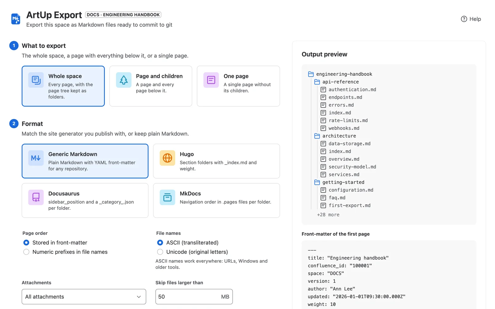
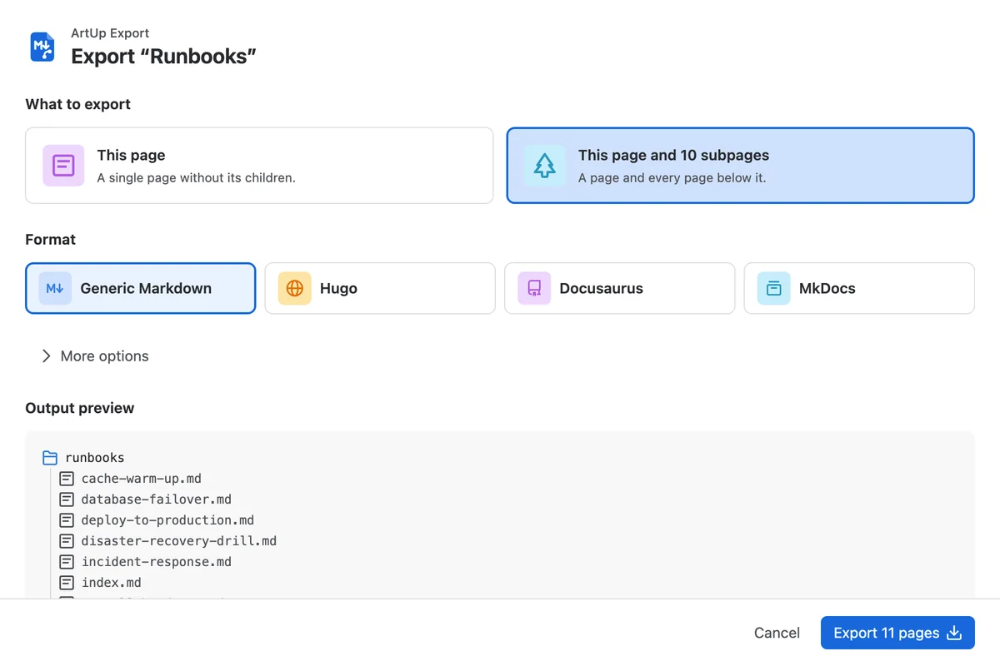
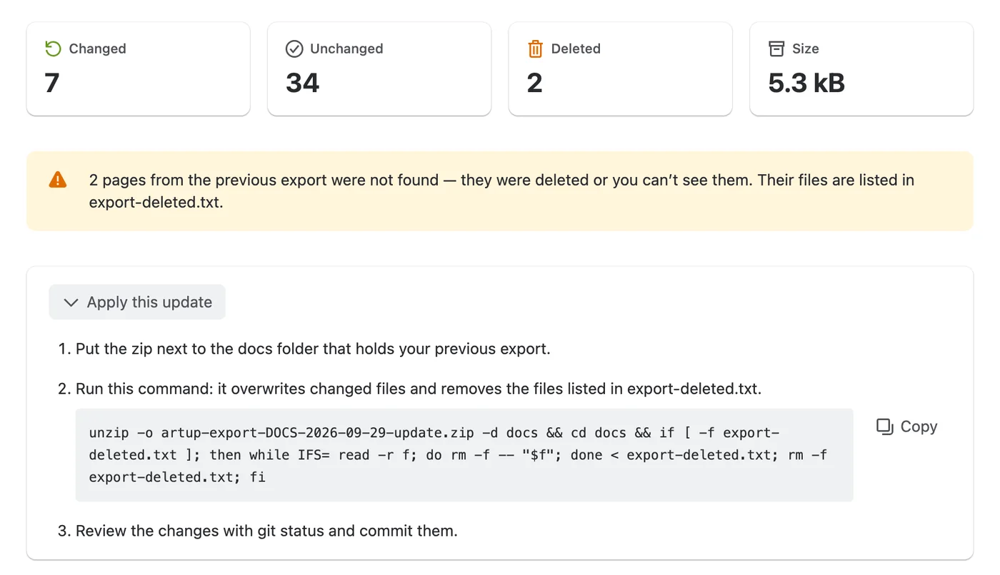
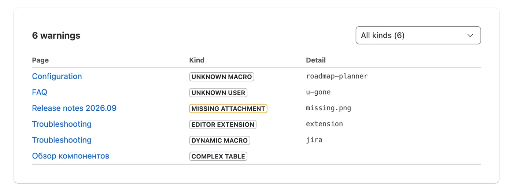

ArtUp Export for Confluence Cloud
Confluence to git-ready Markdown
Export a page, a branch or a whole space as Markdown you can commit: the full page tree in Confluence order, file names that stay the same between exports, YAML front-matter on every page, attachments next to their pages — and update exports that contain only what changed.
- Runs on Atlassian
- Free for up to 10 users
- Hugo · Docusaurus · MkDocs
- 26 languages, light and dark

Built for docs that live in git
Confluence's own Markdown export covers one page at a time. ArtUp Export gives you the whole tree, in a shape a repository and a static site generator can use.
The whole tree, in Confluence order
Every level of the page tree becomes folders: a page with children is a folder with an index file, a page without children is one .md file.
- Order kept as in the Confluence sidebar — in front-matter or as numeric prefixes.
- ASCII file names from the titles, including accented, Cyrillic and other scripts; clashes get the page id.
- Links between pages and images become relative paths.
- Start from the space, or from any page: ••• → Export to Markdown.

Front-matter your site generator understands
Each page starts with YAML front-matter: Confluence id, title, space, parent, version, last author, update time, labels and the page URL (confluence_url). There is no export timestamp, so exporting an unchanged space gives byte-identical files.
A page keeps its file name on later exports; renamed and moved pages are handled by the update's delete list.
---
title: "Deploying to production"
confluence_id: "100042"
space: "DOCS"
parent_id: "100040"
version: 7
author: "Ann Lee"
updated: "2026-09-18T09:30:00.000Z"
weight: 30
labels:
- "runbook"
confluence_url: "https://your-site.atlassian.net/wiki/spaces/DOCS/pages/100042"
---Updates that git can diff
Every zip carries export-manifest.json — page ids, versions and paths, no content. Drop the previous zip into Update previous export and the new zip holds only new and changed pages, their attachments and export-deleted.txt for renamed, moved and deleted pages.
One command applies it, and git status shows exactly what changed in Confluence.

Presets for the tools you publish with
Pick a preset and the export writes the index files, ordering and navigation files that generator expects, and panels in its own admonition syntax.
- Generic Markdown
index.md,weightin front-matter, GitHub alerts for panels. For any repository. - Hugo
_index.mdsection folders andweight. - Docusaurus
sidebar_position,_category_.jsonper folder, MDX-safe output,:::noteadmonitions. - MkDocs
.pagesper folder for the awesome-pages plugin,!!! noteadmonitions.
How updates work
Keep a Confluence space and a docs folder in git in step, without re-reviewing hundreds of unchanged files.
- Export once and commit.
Run a full export and commit the unzipped tree, for example into
docs/. - Export an update.
Later, choose Update previous export and drop in the previous zip or its
export-manifest.json. - Apply it and review.
Run the command below next to your
docs/folder, then review withgit statusand commit.unzip -o <zip> -d docs && cd docs && if [ -f export-deleted.txt ]; then while IFS= read -r f; do rm -f -- "$f"; done < export-deleted.txt; rm -f export-deleted.txt; fi
Every gap is on the list
Panels, code, tables, expands, task lists, status and Jira links convert to Markdown. When something has no Markdown equivalent — a dynamic macro, a merged-cell table, a missing attachment — the page gets a placeholder and the result screen lists it with its page. The same list is saved in the manifest. All warning kinds explained →

Your content never leaves Atlassian and your browser
ArtUp Export reads Confluence with your permissions and builds the zip in your browser. There are no ArtUp Labs servers in the path.
- Runs on AtlassianNo external servers and no egress.
- Nothing storedPage content is not sent to the app's backend and not stored by the app.
- Your permissionsPages you cannot see in Confluence are not exported.
- Read-onlyThe app never writes to Confluence.
- Tested at 1,000 pages1,001 pages and 200 attachments in about 4 minutes; an unchanged re-export is byte-identical.1
Free for up to 10 users
Larger sites subscribe per user through the Atlassian Marketplace, billed by Atlassian with your other apps. Start a free trial from Confluence's Apps menu.